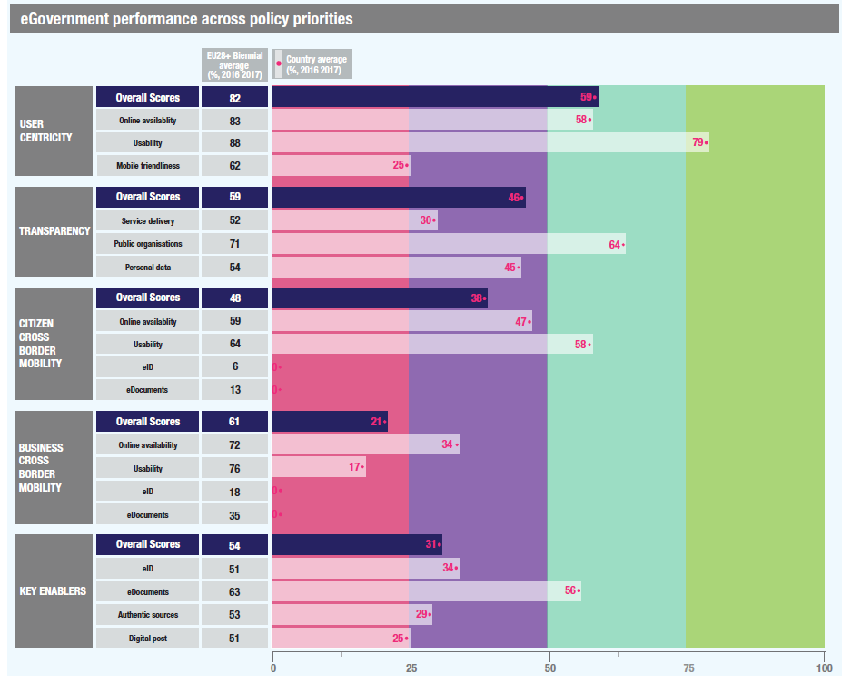
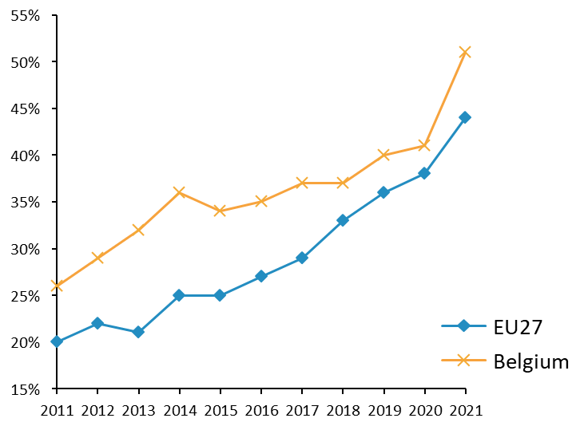

ISA2


Digital Government Factsheet 2019
Montenegro
ISA2
Table of Contents
Country Profile 3
Digital Government Highlights 6
Digital Government Political Communications 7
Digital Government Legislation 12
Digital Government Governance 16
Digital Government Infrastructure 22
Digital Government Services for Citizens 27
Digital Government Services for Businesses 34
Country Profile
Basic data
Population: 622 359 inhabitants (2018)
GDP at market prices: 6.9%
GDP per inhabitant in PPS (Purchasing Power Standard EU 28=100): 46 (2017)
GDP growth rate: 4.7% (2017)
Inflation rate: 2.6% (2018)
Unemployment rate: 16.62% (2019)
General government gross debt (Percentage of GDP): 62.27% (2018)
General government deficit/surplus (Percentage of GDP): 3.6% deficit / 2.1% surplus
Area: 13 812 km²
Capital city: Podgorica
Official language: Montenegrin
Currency: Euro
Sources: Eurostat, Monstat, ZZZCG, Ministry of Finance (last update:10 June 2019)
Digital Government Indicators
The following graphs present data for the latest Digital Government Indicators for Montenegro compared to the EU average. Statistical indicators in this section reflect those of Eurostat at the time the Edition is being prepared.
Digital Government State of Play
The graph below is the result of the latest eGovernment Benchmark report, which monitors the development of eGovernment in Europe, based on specific indicators. These indicators are clustered within four main top-level benchmarks:
User Centricity – indicates to what extent (information about) a service is provided online and how this is perceived.
Transparency – indicates to what extent governments are transparent regarding: i) their own responsibilities and performance, ii) the process of service delivery and iii) personal data involved.
Cross-Border Mobility – indicates to what extent EU citizens and businesses can use online services in another country.
Key Enablers – indicates the extent to which five technical pre-conditions are available online. There are: Identification (eID), Electronic documents (eDocuments), Authoritative Sources, and Digital Post. Digital Post refers to the possibility that governments communicate electronically-only with citizens or entrepreneurs through e.g. personal mailboxes or other digital mail solutions.
These top-level benchmarks are measured using a life-events (e.g. mystery shopping) approach. Eight life events are included in the overall eGovernment performance score. Four of these life events were measured in 2013, 2015 and 2017 and the other four were measured in 2012, 2014, 2016, and again in 2018. The life events measured in 2017 were Regular business operations, Moving, Owning and driving a car and Starting a small claims procedure. The life events measured in 2018 are Business start-up, Losing and finding a job, Family life and Studying.
Source: eGovernment Benchmark Report 2018 Country Factsheet
Digital Government Highlights
Digital Government Political Highlights
The National Action Plan for Implementation Initiative for Open Government Partnership 2018-2020 focuses on various commitments such as public participation and access to information.
The Cyber Security Strategy for Montenegro 2018-2021 was adopted to enhance data protection, and strengthen cooperation.
One of the priority strategic areas within the health system at the national level, the Strategy for Development of Integrated Health Information System and e-Health 2018-2023, was the development and improvement in an integral eHealth information system.
The Strategy of Smart Specialisation for Montenegro 2018-2024 follows three key strategic directions: healthier, sustainable, modernised and digitised Montenegro.
Digital Government Legislation
The Rulebook on eID and Open Data (2018) prescribed the manner of publishing information in open data.
Digital Government Governance
There were no new digital government organisations in Montenegro in 2018.
Digital Government Infrastructure
The following digital government infrastructure initiatives were implemented in 2018 and early 2019:
The Open Data Portal;
eLicences for Businesses on the eGovernment Portal;
Enhanced versions of the eParticipation portal and the Citizen’s Voice ePetition.
Digital Government Services for Citizens and Businesses
In 2018, 315 new services were created on the Montenegro eGovernment Portal.
Digital Government Political Communications
Specific political communications on digital government
Strategy for the Information Society Development 2020
The Strategy for the Information Society Development 2020 outlines the strategic development tools in the field of information society, with a view to reaching the EU standards set out in the Digital Agenda 2020 and the Digital Single Market Strategy. The document is divided into chapters that have been identified as the key steps to achieve the EU standards in this field, namely:
Broadband infrastructure
Cyber Security
Human Capital
Digital Business
eEducation
eHealth
eInclusion
eGovernment
Research, innovation and development
The Strategy aims to provide for the growth of the ICT sector, through the realisation of the strategic development priorities, thus ensuring broader use of the ICT in all sectors and encouraging economic growth in general.
Strategy Reform of Public Administration 2016-2020
The Strategy Reform of Public Administration 2016-2020 encompasses the entire public administration system which, in Montenegro, includes state administration, local self-government and organisations with public powers (organisations with their own legal personality performing specific administrative tasks conferred upon them by the Law or according to the Law).
The general objective of reform activities by 2020 is the creation of an efficient and service-oriented public administration, characterised by the increase of citizens’ trust and its performance.
The document focuses on the selection of priority objectives, the fulfilment of which is expected to contribute significantly to the improvement of public administration in Montenegro. The volume and dynamics of the activities are defined in real terms, taking into consideration the specificities of Montenegro, as a small country with limited capacities at all levels of public administration. Therefore, the administrative apparatus in Montenegro should strive towards a higher degree of efficiency and rationality, in accordance with the country’s demographic and social features.
Key enablers
Access to public information
National Action Plan for Implementation Initiative for Open Government Partnership 2018-2020
The Government of Montenegro is fully committed to the application and promotion of highest professional integrity standards in the civil service. As the coordinator of the overall public administration reform (PAR) process in Montenegro, with practical and value-oriented policies, the National Action Plan aims benefit the public interest and increase citizens’ participation in policy-making. It seeks to do this by coordinating Government commitments within the OGP initiative: the Ministry of Public Administration (MPA) invests additional efforts to make the official commitment visible at the national and local levels through tangible measures and attainable goals.
The efforts within the framework of the National Action Plan for Implementation Initiative for Open Government Partnership 2018-2020 will focus on five key commitments as follows:
Enhanced public services;
Public participation;
Improved public integrity;
More efficient resource management; and
Access to information.
eID and Trust Services
Strategy Reform of Public Administration 2016-2020
In Montenegro, there is no specific strategy regarding eID and Trust Services but they are recognised in the Strategy Reform of Public Administration as key enablers for improvement of service delivery process. After the adoption of legislation in this area, activities have been recognised in the Action Plan for Open Government Partnership.
Security aspects related to digital government
Cyber Security Strategy of Montenegro 2018-2021
For the purpose of providing an adequate implementation of the Cyber Security Strategy for Montenegro 2018-2021 and accompanying action plans, pursuant to Art. 13 para.1 of the Law on Information Security (Official Gazette, No. 14/10 and No. 40/16), the Government of Montenegro adopted a Decision on forming the Information Security Council with the task of monitoring the implementation of the Strategy and respective action plans.
This Strategy identified a total of eight objectives for improving the National Cyber Strategy for Montenegro 2018-2021, namely:
1. Reliance on European and Euro-Atlantic concepts;
2. Strengthening cyber defence capacities;
3. Centralisation of cyber expertise and resources;
4. Strengthening of inter-institutional cooperation;
5. Data protection;
6. Cyber security education;
7. Strengthening partnership between public and private sectors;
8. Strengthening regional and international cooperation.
Interconnection of base registries
Interconnection of base registries in various strategies
There is no specific strategy regarding interconnection of base registries, but interoperability is recognised in the Strategy Reform of Public Administration and Strategy for Development of Information Society. The necessity of interoperability between base registries and information systems is defined through various activities such as:
Providing interoperability of the registers and availability of data from the registry of users.
Connecting key registers through the interoperability platform.
eProcurement
Strategy on Development of Public Procurement 2016-2020
The main strategic goal of introducing electronic public procurement in Montenegro is, above all, to increase transparency and efficiency in the public procurement system. Also, to contribute in the fight against corruption and other irregularities. There is also the need for a unified public procurement system that is unified and standardised. The IPA Project, which should result in the implementation of eProcurement, will be a major contributor to achieving this goal. It will significantly upgrade the existing and introduce some new functions into the current Montenegrin Public Procurement Portal. The PPA is a successful platform for the electronic announcement of tenders and other documents related to public procurement procedure.
Domain-specific political communications
Strategy for Development of Integrated Health Information System and eHealth 2018-2023
One of the priority strategic areas within the functioning and organisation of the healthcare system at the national level in the Strategy is also development and improvement of an integral eHealth information system. The concept of interoperability and the introduction of eServices potentially support the principle of integration in the process of providing health care and enable a timely and quality information exchange in health care at the national and international level. System sustainability, control and rational consumption in the health sector are almost impossible without adequate IT support. The strategic approach in planning the development of an information system in health care is aimed at maximum use of information and communication technology potentials and routing activities of all stakeholders in the health system. This will contribute to help achieve a clear and concrete vision for the health system, the welfare of citizens, health care workers and society as a whole.
Strategy for Development of the Social and Child Protection Systems
The Social Welfare Information System (SWIS) is recognised by the Strategy for Development of the Social and Child Protection Systems, for the period from 2018 to 2022.
The SWIS project is a backbone of the social welfare reform process as it enforces the social welfare reform by development of a more efficient, effective and just system of social protection and quality service for the poor and vulnerable.
Information-Communication Technology Strategy for Justice System
The adoption of the Information-Communication Technologies Strategy for Justice System for the period 2016-2020 has prepared the national justice system for new challenges in accordance with European standards and values. In particular, the Justice Information System has been recognised as a system of special importance for Montenegrin society and the progress of Montenegro on the path of European integration. This Strategy should ensure the continuity and expansion of the scope of Information Communication Technologies, through the established and user-oriented needs of a single justice system.
Interoperability
National Interoperability Framework
The National Interoperability Framework was enacted in 2013.
By adopting the National Interoperability Framework as a strategic document of the public administration to support the implementation of interoperability, the Government of Montenegro defined the rules and methods establishing interoperability in Montenegro. In this way, the basis was created to harmonise business processes to respect the European dimension of the provision of public services, security policies, privacy and storing electronic records, without imposing specific technological solutions.
The Ministry of Labour and Social Welfare uses the Social Card-Social Welfare Information System (SWIS) which maintains interoperability with nine national institutions.
The information system includes all business processes in the centres: case management, social transfers/applications for benefits, processing, approval, monitoring and auditing, calculations, payments, new system of record keeping, improved monitoring and management, reporting, and, last but not least, the system provides real-time data for policy and evidence-based policies. Furthermore, through the interoperability module, the Centre for Social Work becomes a one-stop shop where all documents are submitted for determining the acceptability of social benefits. The system generates the so-called eSocial cards (property, social, employment status) of individual/family social profiles.
In this way, it is easier for users to learn their rights and reduce their costs related to the collection of a large number of supporting documents in paper form.
Also, the quality and efficiency of the work of the Centres for Social Work has been increased by directly downloading data from the information systems of other institutions.
Framework for Interoperability of the Montenegrin Health System
Although the provision of public services in almost all cases include data exchange between information systems, interoperability is a wider concept that includes the possibility of organizing joint work on commonly useful and commonly agreed goals. Interoperability is also a prerequisite and mitigating factor for efficient provision of public services, which addresses the need for:
Cooperation between public administration institutions;
Exchange of information to meet legal requirements;
Exchange and re-use of information to increase administrative efficiency and reduce administrative burdens on citizens and businesses;
Better provision of public services to citizens and businesses on a one-on-one principle place (one-stop government);
Reducing costs for public administrations, businesses and citizens through effective and effective provision of public services.
The ultimate goal of NOI is to establish a stable business and technological interoperability of the system in public administration, in accordance with the principles of a user-oriented administration.
Emerging technologies
Strategy of Smart Specialisation for Montenegro
The Strategy of Smart Specialisation for Montenegro 2018-2024 follows three key strategic directions:
Healthier Montenegro.
Sustainable Montenegro.
Modernised and digitised Montenegro.
Modernised and digitised Montenegro should enable reaching the standards of the EU that are related to Digital Agenda 2020, Single Digital Market Strategy and the new EU Industrial Policy Strategy. The development and application of ICT is of utmost importance for economic development. Reaching the standards and fulfilment of the goals will lead to the development of trade, better use of capital and strengthening national competitiveness. The introduction of modern technologies and the utilisation of available raw materials in priority sectors will result in the placement of high-quality products on the market. The foundations of this direction are related to better infrastructure, eEconomy and information security. Fulfilment of this goal is also directly connected to all the priorities defined by the Smart Specialisation Strategy, which is why ICT has been defined as a horizontal sector that provides information and technology support to selected priorities.
Digital Government Legislation
Specific legislation on digital government
Law on Electronic Government (2014)
The Law on Electronic Government (Official Gazette Montenegro, No. 032/14) regulates state bodies, state administration bodies, local self-governing authorities, local government bodies, public services and legal entities performing public services. To exercise their competences, they communicate with citizens, companies, other legal entities, persons and entrepreneurs by electronic means and they process, exchange and publish information and information in electronic form.
Key enablers
Access to public information
The Electronic Document Act
The Electronic Document Act (Official Gazette Montenegro, No. 005/08 and No. 040/11) regulated the use of electronic documents in legal transactions, administrative, judicial and other procedures, as well as rights, obligations and responsibilities of companies, entrepreneurs, legal and natural persons, state bodies, state administration bodies, local self-government units authorities and organizations that exercise public authority in relation to electronic documents, unless otherwise provided by law.
Law on Administrative Procedure
Under the Law on Administrative Procedure (Official Gazette of Montenegro, No. 56/2014, No. 20/2015, No. 40/2016 and No. 37/2017) state and local government bodies were obliged to act when, in administrative matters, directly applying the regulations, decided on the rights, obligations or legal interests of a natural person, legal persons or other parties, as well as when performing other tasks determined by this Law.
Article 13 stipulated that when deciding in the administrative procedure, the Public Law Authority, ex officio, inspects, obtains and processes data from official records and registers kept by that public authority or other competent authority, unless access to such data is limited in accordance with law.
Regulation on the Content and Manner of Data Management in a Uniform Information System for Electronic Exchange of Data
This Regulation (Official Gazette Montenegro, No. 41/2015) on content and method of data management in unique information system for electronic data exchange, governed the management of the system, technical requirements, protection measures, as well as handling the request for logging in to the system and registering for data exchange.
Regulation on the Mode of Work, Content and Management by the eGovernment Portal
This Regulation regulated the contents of the Internet portal of eGovernment, the manner of authentication and authorisation of users, the way of managing the portal of eGovernment, obligations of state bodies, state administration bodies, local self-government bodies, local government bodies, public services and legal entities public authorities regarding the use of this portal, the obligations of the main administrator of the eGovernment portal and other issues of importance for the functioning of the eGovernment portal.
Rulebook on the Manner of Management and Functioning of Information System for Document Management
This Rulebook prescribed the manner of managing and functioning of the information system for document management (eDMS information system), the reception, classification and submission of documents between the state administration bodies, as well as the state administration bodies and the Secretariat-General of the Government.
eID and Trust Services
Law on Electronic Identification and Electronic Signature
The Law on Electronic Identification and Electronic Signature (Official Gazette Montenegro, No. 31/2017) regulated the conditions for using electronic signatures, electronic stamps, electronic time stamps and services of electronically recommended deliveries in legal transactions, administrative, judicial and other procedures and certification for the authentication of the website, as well as the electronic identification system and the conditions for recognition of electronic identification means of other countries.
Rulebook on eID and Rulebook on Open Data
The Rulebook on Open Data prescribed the manner of publishing information in open data, found in the Official Gazette Montenegro, No. 53/2018.
In accordance with the prescribed obligations arising from the Law on Electronic Identification and Electronic Signature, the following bylaws were adopted in order to regulate this area more closely:
Decree on the manner of performing qualified certification services for state administration bodies;
Rulebook on closer conditions to be met by a qualified certification service provider;
Rulebook on closer requests that must be met by a qualified electronically registered delivery service;
Rulebook on minimum technical standards and accompanying procedures in relation to which the degree of security of the electronic identification system is determined;
Rulebook on measures and activities for protection of certificates for electronic signature and electronic stamp;
Rulebook on the manner of assessing the compliance of qualified funds for the creation of electronic signatures and electronic seals and the contents of the list of certified qualified funds for the creation of electronic signatures and electronic seals;
Rulebook on the manner of carrying out the verification and the manner of performing the service of keeping a qualified electronic signature and a qualified electronic stamp;
Rulebook on the minimum amount of liability insurance for damages arising from the provision of certification services;
Rules on the framework for the interoperability of the electronic identification system;
Rulebook on the content and method of keeping records of providers of certification services and registry of qualified certification service providers
Security aspects related to digital government
Law on Information Security
Information security is provided through the application of information security measures and standards in accordance with the Law on Information Security (Official Gazette Montenegro, No. 014/10 and No. 040/16).
Law on Protection of Personal Data
Protection of personal data is provided under the conditions and in the manner prescribed by the Law on Protection of Personal Data (Official Gazette Montenegro, No. 079/08, No. 070/09, No. 044/12, No. 022/17). This is done in accordance with the principles and standards contained in ratified international human rights treaties and basic freedoms and generally accepted rules of international law.
Regulation on Measures of Information Security
The Regulation on Measures of Information Security (Official Gazette Montenegro, No. 058/10 and No. 055/15) established information security measures which provide basic data protection at the physical, technical and organisational level.
Interconnection of base registries
Law on Central Register of Population
This law (Official Gazette Montenegro, No. 041/10, No. 55/16) determines the content of the central register of the population of Montenegro, exchange, management, maintenance, storage and use of data, the determination and use of the personal identification mark and regulates other issues of relevance to the central register of the population.
eProcurement
Law on Public Procurement of Montenegro
The Law on Public Procurement of Montenegro, Articles 114-116, provided for a possibility of conducting a public procurement procedure in an electronic form, thus creating basic preconditions for application of electronic means in public procurement which has become equal to the approach based on paper documents. This solution was developed at the time when the EU Directive 2004/18 was in force, which resulted in the fact that the solution only partially met the requirements imposed by the new Directives.
Montenegro drafted the new Law on Public Procurement. It has the largest possible degree of harmonisation of Montenegrin legislation with EU rules that follow two more circular laws on public private partnership and concessions.
Domain-specific legislation
Law on Services
The Law on Services contained the legal basis for the adoption of bylaws that will define the manner of cooperation and exchange of information with the EEA countries, and in particular cooperation regarding the supervision of the provision services, by taking warning measures and the way the Ministry works in the IMI system. The manner of cooperation and exchange of information with the Ministry of Economy on this issue will be prescribed by the Decree on a Single Point of Contact for services planned for the IV quarter of 2020.
The Law is in line with the Directive on Services Directive 2006/123 / EC.
Law on Health Data Collection
The Law on Health Data Collection (Official Gazette Montenegro, No. 80/08 and No. 040/11) regulated the types, content and manner of keeping data collections in the field of health as elements of unique health statistics, as well as the way of collecting, processing, using, protecting and storing data from the collection.
Patient Rights Act
Health services, provided for the purpose of preserving and improving health, preventing illness, treatment and health care and rehabilitation were established by the Patient Rights Act (Official Gazette Montenegro, No. 40/2010). In exercising the rights established by this Law, respect, human dignity, physical and psychological integrity and the protection of these rights was ensured.
Rulebook on Conditions, Mode and Procedure for Access to Data in the Data Exchange Centre for Health Insurance Fund of Montenegro
Access to information provided by healthcare providers in accordance with the law to the Exchange Centre Data of the Health Insurance Fund of Montenegro, shall be provided under the conditions and in accordance with the procedure prescribed by this Rulebook (Official Gazette Montenegro, No. 070/15).
Interoperability
Law on Electronic Government
Interoperability is regulated by the Law on Electronic Administration.
Emerging technologies
No legislation was adopted in this field to date.
Digital Government Governance
National
Policy
Ministry of Public Administration
The Ministry of Public Administration was established by the Regulation Amending the Regulation on Public Administration Organisation and Operation, which the Government of Montenegro adopted on 25 November 2016.
The Ministry of Public Administration is responsible for the development of the information society in Montenegro.
The Ministry participates in the preparation of regulations and policies related to electronic administration, as well as other regulations related to the field of the information society.
 | Suzana Pribilović Minister of Public Administration Contact details: Rimski trg 45 MNE-81000, Podgorica Tel.: +382 20 482 131 Fax.: +382 20 241 790 E-mail: kabinet@mju.gov.me Source: www.mju.gov.me |
Coordination
Ministry of Public Administration
The Ministry of Public Administration is in charge of:
Informatisation of the operations of public administration bodies through planning, development and support in the implementation of electronic services;
Planning, development and support in the implementation of the information and communication portal with citizens;
Planning activities for the promotion of eGovernment and electronic services;
Monitoring the development of electronic administration in Montenegro and harmonisation with European standards and best practices in this field;
Monitoring methodologies and collection of digitalisation and electronic administration development parameters based on established development indexes;
Coordination of research work on eGovernment development in Montenegro in cooperation with other bodies and institutions;
Application of accepted standards and methodologies for monitoring the level of use of electronic services and user satisfaction;
Recognising different user needs and proposing models to increase their satisfaction;
Preparing the analysis and report on the state of eGovernment and other relevant data in this field and other tasks from the scope of work of the Ministry.
Implementation
Ministry of Public Administration
The Ministry of Public Administration monitors the implementation of the Strategy for the Information Society Development in Montenegro and coordinates the development of all information technologies.
The Ministry also monitors the implementation of laws and regulations in the field of information technologies and state information infrastructure.
Post of Montenegro – Registration Certification Authority
The Certifying Body of the Postal Office of Montenegro issues the following types of electronic certificates:
Qualified digital certificate for advanced electronic signature issued on a token;
Qualified Digital Certification for Electronic Signature;
Qualified digital certificate for SSL servers.
Council for Information Security
Pursuant to Article 13a of the Law on Information Security (Official Gazette of Montenegro, No. 14/10 and 40/16), the Government of Montenegro established the Information Security Council.
The Council's tasks are to:
Inform the Government of Montenegro of important issues related to information and cyber security;
Initiate and propose measures to improve information and cyber security in the public and private sectors;
Monitor the implementation of Montenegro's Cyber Security Strategy 2018-2021 and action plans for its implementation;
Monitor and coordinate activities in the field of information and cyber security;
Propose measures for harmonisation of the legislative and administrative framework in order to improve the information and cyber security of Montenegro;
Work on the improvement of cooperation in the field of information and cyber security between state bodies, state administration bodies, local self-government units, legal entities that exercise public authority, and other legal and physical persons that gain access or act with data in the sense of the law regulating information security and coordinates their activities;
Work to improve cooperation with the private sector in the field of information and cyber security;
Work to improve international cooperation in the field of information and cyber security;
Inform the National Security Council in case of threats and cyber-incidents of large scale;
Deliver the Government of Montenegro a report on its work, at least once a year.
Council for Public Administration Reform
In the area of political coordination of the reform processes, the Public Administration Reform Strategy 2016-2020 defines the competence of the Public Administration Reform Council (hereinafter: the Council). The Council was officially established on 29 December 2016. The Council consists of: Deputy Prime Minister for the Political System, Interior and Foreign Policy, Minister of Public Administration, Minister of Finance, Minister of European Affairs, Secretary General of the Government, Montenegro Community Representative, Personnel Director and two representatives of the Non-Governmental Sector.
The education of this advisory body is necessary, given the extent and importance of public administration reform in the forthcoming period. It will be focused on activities carried out by public administration bodies in order to achieve PAR principles, which are the basis of this strategic document.
The key tasks of the Council will be to monitor the implementation of the 2016-2020 Strategy and the Action Plan, as well as other activities related to public administration reform in Montenegro (consideration of draft regulations, strategic, planning and analytical documents related to public administration reform, etc.).
The Ministry of Public Administration provides professional and administrative support to the work of the Public Administration Reform Council.
The eGovernment Portal, as an electronic counter for access to local and state administration services, enables the improvement of the efficiency of the work of the public sector, the efficiency of the employees' work, contributes to the reduction of the business barrier and other.
National Computer Incident Response Team (CIRT)
Pursuant to the Law on Information Security, the Directorate for Information Security and Computer Incidents - CS / NCIRT (Computer Incident Response Team) presents to the organisational unit of the Ministry of Public Administration (MPA) and coordinates the work of local CIRT teams.
The obligation to establish local CIRT teams in institutions is to establish the national CIRT infrastructure, which is also envisaged by the Strategy of Cyber Security of Montenegro Up 2018-2021 and the accompanying Action Plan.
The Ministry of Public Administration is in charge of preparing reports on implementing conclusions and continues activities on coordination and implementation of the project for the establishment of the CIRT infrastructure.
With the aim of establishing the relevant conclusions of the Government of Montenegro, state bodies and authorities in charge of administration, local self-government units, legal entities with public authorisations, and other legal and natural persons who have access to or deal with data, in cooperation with national CIR. They establish their local CIRT teams or determine the contact person who will deal with the establishment of a system of protection against computer security incidents on the Internet, and who will have direct communication with the National CIRT team.
Agency for Personal Data Protection
The Agency for the Protection of Personal Data performs the activities of the supervisory body established by the Law on Personal Data Protection. In carrying out tasks within its scope, the Agency is independent. The Agency has the status of a legal entity.
It is within the competence of the Agency to carry out administrative and professional tasks related to the protection of personal data.
Other tasks include:
Supervise the implementation of personal data protection in accordance with this law;
Resolve the requirements for protection of rights;
Give opinions on the application of this law;
Approve the establishment of personal data collections;
Give an opinion in case of suspicion whether a particular set of personal data is considered a collection in the sense of this law;
Monitor the implementation of organisational and technical measures for the protection of personal data and suggest improving these measures;
Provide suggestions and recommendations for improving the protection of personal data;
Give an opinion on whether a particular way of processing personal data violates the rights and freedoms of a person;
Cooperate with the authorities responsible for overseeing the protection of personal data in other countries;
Cooperate with the competent state authorities in the process of drafting regulations related to the protection of personal data;
Propose to assess the constitutionality of laws, or the constitutionality and legality of other regulations and general acts regulating the issues of processing personal data; and
Perform other activities in accordance with this Law. (Article 50 Personal Data Protection Act, Official Gazette of Montenegro No. 79/08 and 70/09).
Ministry of Economy
The Directorate of Services, established within the Directorate for Multilateral and Regional Trade Cooperation and International Economic Relations of the Ministry of Economy, is in charge of establishing a single point of contact for services that will function in accordance with the Law on Electronic Government.
The legal basis for the establishment of single point of contact for services was contained in Article 8 of the Law on Services, which prescribes the obligation to establish an electronic single point of contact in Montenegro. The law determined the functioning of the single point of contact for services through a website, in Montenegrin and English languages. Interested persons are provided with information on the procedures and conditions for access to or provision of services that are subject to the regulation of this law.
Ministry of Health
The Ministry of Health is in charge of:
Management, implementation, improvement, operation, design and planning of the Integrated Health Information System in accordance with the defined standards;
Establishing a logical organisation of business processes, data, software applications and IT infrastructure so that they meet the integration and standardisation needs for the work of an Integrated Health Information System, and give consent for the development and implementation of information systems that work with it;
Supervision over the use of established standards, data models, use of common coders and parameters for exchanging and unifying data;
Establishing a framework of interoperability of the health system on which the Integrated Health Information System is based, registers and records in the health system;
Planning, development and improvement of the eHealth system in Montenegro;
Monitoring the use of the Integrated Health Information System and eHealth while planning, evaluating, designing opportunities for developing new parts of these systems, or improving existing ones, monitoring trends and introducing new eServices for citizens;
Participation in the preparation of laws and by-laws in the field of an ICT application in the health system of Montenegro;
Participation in the realisation of international cooperation in the field of application of ICT in the health system of Montenegro and the field of eHealth.
Ministry of Justice
The Ministry of Justice is responsible for monitoring the process of implementation of the Information Communication Technologies Strategy for the Justice System with the aim of establishing a unified Justice Information System; centralised management of a unified Justice Information System, in cooperation and synergy with all ICT departments of judicial institutions in the country.
The Ministry is also in charge of providing the conditions for constant planned improvement and development of all subsystems of the Justice Information System and their interoperability.
Statistical office of Montenegro – MONSTAT
Montenegro's Directorate for Statistics - MONSTAT is the official body for producing official statistics. MONSTAT's role as a provider of official statistics in the Montenegrin statistical system has been recognised by domestic and international public.
As a statistical leader, MONSTAT is obliged to perform data collection, processing and dissemination of Montenegrin statistics in an independent, transparent and highly professional manner.
Agency for Electronic Communications
The Agency for Electronic Communications and Postal Services (hereinafter referred to as the Agency) started work on 8 March 2001 as an independent regulatory body in the field of electronic communications and postal services. The basic principles that the Agency conducted in the sectoral regulation procedures were: to provide a safe and predictable environment for the operations of operators and their significant investments, to provide conditions for the implementation and development of new technologies throughout the territory of Montenegro and to encourage the rational use of limited resources (radio-frequency and numbering/address), encouraging competition to prevent distortions of market competition among operators, resolving disputes between operators, and continuous improvement of consumer protection interests. The Agency is not required to seek instructions from governmental and other bodies and organisations or other persons in carrying out regulatory and other tasks.
Support
No responsible organisations were reported to date.
Base registry coordination
No responsible organisations were reported to date.
Audit
State Audit Office
The State Audit Institution is a supreme control organ of budget and state property, local government units, funds, the Central Bank of Montenegro and all other legal entities that the state has ownership in.
The Institution independently determines the audit entities, content, volume and audit type. Once a year, the Institution is obliged to audit the annual budget balance sheet of the Republic of Montenegro.
The State Audit Institution controls the regularity, thrift, efficacy and efficiency of budget expenditures and the state property management.
Data Protection
Agency for Personal Data Protection
The Agency for Personal Data Protection performs the affairs of a supervisory authority prescribed in the Personal Data Protection Law. In performing affairs within the scope of work, the Agency is autonomous and independent. The Agency has a status of a legal person.
The competences of the Agency include performing administrative and technical affairs in the area of personal data protection.
Subnational (federal, regional and local)
Policy
No responsible organisations were reported to date.
Coordination
Ministry of Public Administration
The Ministry of Public Administration performs administrative tasks related to the monitors and coordination information- communication technologies (ICT) at the state and local level.
Implementation
No responsible organisations were reported to date.
Support
No responsible organisations were reported to date.
Base registry coordination
No responsible organisations were reported to date.
Audit
No responsible organisations were reported to date.
Data Protection
No responsible organisations were reported to date.
Digital Government Infrastructure
Portals
eGovernment Portal
The Montenegrin eGovernment Portal groups together various services for individuals, businesses and public administration. These relate to, for example, health, tourism, finance, education and public procurement.
eParticipation
Citizens can actively participate in the creation of laws and policy documents, and they may express opinions and attitudes in the public debate.
Citizen's Voice ePetition
The citizens of Montenegro can submit petitions for initiatives within the competence of the Government of Montenegro.
Open Data Portal
The aim of the portal is to allow searching, linking, retrieving and using public data for commercial and non-commercial purposes through a common catalogue of metadata.
Business eLicences
On the eGovernment Portal, which represents the central point for providing electronic services of state administration bodies, electronic services for business licensing (eLicence) have been created in order to transparently inform interested persons about all administrative procedures for obtaining and renewing licenses for performing economic activity, with the possibility of online submission of requests for individual licenses.
eLicences are part of the project Establishment of the Single Point of Contact for Services through IPA II 2016.
Government web portal
The Web portal of the Government of Montenegro includes internet presentations of the Government, the General Secretariat of the Government, the Prime Minister, the Deputy Prime Minister, ministries, the administrative bodies within the ministries, as well as the independent administrative bodies. There is a single main portal, while each sub portal has its own subdomain. Updating content is enabled using a specially developed CMS system.
ESV
The project of the Government's Electronic Session started in 2009, and the first electronic session was held on 18 February 2010. The goal of the project was to optimise the business processes of Government by transitioning from conventional to electronic means. This resulted in high quality and efficient internal processes of the Government of Montenegro. Project beneficiaries included members of the Government, commissions and councils, as well as representatives of ministries in charge of preparing materials for sessions.
The project achieved the following goals: more efficient preparation of the participants of the sessions, more efficient distribution of materials for the sessions of the Government, commissions and councils, efficiently forwarding the materials of the Government and its commissions and councils, possibility of easy viewing of all relevant data and materials required for the participants of the sessions, communication between participants is accelerated in different stages of material processing and the administration costs are reduced.
eDMS
The Electronic Document Management System (eDMS) is intended for electronic office operations, which implies the proper recording and electronic archiving of documentation that arises in business administration processes, as well as document management and business procedures.
eDMS provides greater efficiency in resolving cases and implementing business processes, in accordance with applicable regulations. By integrating with other software solutions applied in eGovernment, eDMS builds a functional information base for the development of new electronic services.
eTax
Through the ePrijave Portal taxpayers can submit tax returns electronically for the purpose of faster implementation of the process, as well as easier access to data and forms for the realization of the necessary procedures of the economy and citizens.
eHealth
This portal enables the use and provision of information on electronic services in the health system of Montenegro.
Access to the portal is possible online or via the mobile application (eZdravlje.me). Registration is done by typing the health booklet number (the ten-digit number registered on the first page of the health booklet) and the PIN code.
Networks
Network of State Bodies
The Ministry manages the network of State bodies. The integration of different information systems is becoming increasingly more complex and means that more is required in terms of network quality.
Data Centre
The Ministry manages the data centre where a large number of servers and accompanying equipment are placed. It is used for the needs of the information infrastructure of State bodies and management bodies.
PKI system – Internal CA
The Ministry manages the infrastructure of public keys (GOV. ME-PKI) for internal government needs. Within GOV.ME-PKI was established a certification body with a self-signed certificate for the purpose of providing certification services. Certificates are issued to government officials of the Ministry as well as to other officials in the State administration.
Active Directory (AD)
The Active Directory is a service that manages user accounts and resources on the guests of State bodies, i.e. Domain isu.gov.me. The Domain isu.gov.me functions according to the defined rules for all categories of users, thereby achieving the system's uniformity, more efficient monitoring, and increasing security.
Private Cloud system
The private cloud system is available to all public administration bodies via Self Service Portal and virtual server environment according to their requirements with necessary licenses. Activities have been completed to install and configure hardware and to install network communications equipment. Private Cloud System Centre is also implemented.
Data Exchange
Unified System for Electronic Data Exchange Between Registries
The system provides the possibility of data exchange between five government institutions which exchange data: the Ministry of Interior Affairs, the Ministry of Labour and Social Affairs, the Ministry of Justice, the Ministry of Education and the Tax Administration.
Electronic mail service
The Government manages the electronic mail service (email) for users’ needs in state bodies and management bodies. Emails are conducted via the Exchange Server, which is highly integrated in Active Directory. In addition to the primary receiving/sending feature, it includes address book sharing, calendar, antispam protection, auto backup, web-based mail, and so on.
eID and Trust Services
NS-EID (National system for electronic identification)
A new law on personal identification documents will be enacted in the later 2019. It will allow the authorities to add new data to the national personal identification card, two certificates, one for electronic signature, and the other for electronic identification.
The Law on Electronic Identification and Electronic Signature supports the Law on Personal Identification Documents.
The Ministry of Public Administration, as a state administration authority responsible for electronic government and electronic business, initiated the implementation of an information system for electronic identification, which will be used as a "building block" by all public administration bodies. The electronic identification portal aims to provide the conditions for a secure and reliable application to the information systems of the public administration, in one place.
The information system allows for the identification of electronic identification and authentication and authorisation of users when using electronic services at the national level.
Electronic identification should be possible with different identifiers, i.e. domestic and foreign users, as well as using the certification services of different service providers registered in Montenegro.
eProcurement
Electronic Procurement System in Montenegro
Currently, the initial phase of the implementation of the Electronic Public Procurement System in Montenegro is in progress.
With the introduction of electronic procurement, the electronic means of communication in public procurement procedures will be applied in a comprehensive way, as a substitute for procedures based on paper documents.
An important segment of the development of eGovernment is the establishment of an Electronic Public Procurement System. It is used as a means to improve the efficiency of the procurement process of goods, services and works and achieving savings in the public sector.
eProcurement involves the introduction of electronic processes in support of the various phases of the procurement process and consists of the following modules: before awarding public procurement (eAnnouncements, eTender documentation, eSubmission, eReview and evaluation offers, eAwarding of public procurement) and post awarding procedures (eOrders, eInvoices and ePayments).
Parallel to the mentioned modules, eProcurement is completed with various mechanisms and tools. One of them is an eCatalogues, which implies an electronic bid form for certain types of procedures. eAuctions is a mechanism by which the eProcurement process can be completed (open, restricted, negotiated procedure with the publication of procurement notices and a competitive request for procurement).
eInvoicing
No particular infrastructure in this field was reported to date.
ePayment
NS-SAT (National System for Administrative Fees Payment)
The Ministry of Public Administration in cooperation with the Ministry of Finance - the competent body for the implementation of the information system for the collection of administrative fees (NS-NAT). The NS-NAT system will enable the payment at the desk of state administration bodies and local self-government bodies via the card, as well as the payment of fees electronically on the web portal of electronic services.
The solution supports financial transactions that involve the classification of payments within a single transaction and the mechanism of multiple authentication (multiple signature) of the transaction as well as the fee charged by the card user.
The basic goals of the system are: to enable monitoring and easy checking of all transactions related to the collection of administrative and court fees; reduce the number of abuses occurring in this part of the payment system; enable payment by electronic money, regardless of who the commission costs, the provider or user of the service, and so on.
In this way, the electronic payment for services provided by state authorities will be closed for the first time, which is not the case now because users have to go to counters for payment.
Knowledge Management
No particular infrastructure in this field was reported to date.
Cross-border platforms
Protocol on Electronic Data Exchange Between Customs Administration of Montenegro, Republic of Serbia and Republic of Albania
The Protocol established a minimum set of data from customs declarations for electronic exchange between the contracting parties, individually for export, transit and empty road transport vehicles and has been operating successfully.
Base registries
METAREGISTRAR
The Ministry of Public Administration established the Unified System for Electronic Data Exchange between registries with main register of registers (METAREGISTAR). The METAREGISTAR MPA keeps the information about all registries and manages the data that are in all the registries.
JISERP
Base registries are connected through the JISERP (unique information system for electronic data exchange) in order to exchange the data.
Digital Government Services for Citizens
The information in this section presents an overview of the basic public services provided to the citizens. These were identified taking inspiration from Your Europe, a website which aims to help citizens do things in other European countries – avoiding unnecessary inconvenience and red tape in regard to moving, living, studying, working, shopping or simply travelling abroad. However, the categories used in this factsheet aim to collect a broader range of information, focusing therefore not only on cross-border services, but also on national services.
The groups of services for citizens are as follows:
- Travel
- Work and retirement
- Vehicles
- Residence formalities
- Education and youth
- Health
- Family
- Consumers
Travel
Documents you need for travel in Europe |
Passport Responsibility: | Ministry of Interior |
Website: | http://www.mup.gov.me/en/ministry?alphabet=lat; http://pasosi.me/ |
Description: | Passports to Montenegrin citizens are issued by the Ministry of Internal Affairs. The Ministry of Interior website provides information and offers the possibility to check the status of issuing online. |
Work and retirement
Working abroad, finding a job abroad, retiring abroad |
Job search services by labour offices |
Responsibility: | Employment office, Human Resources Management Authority |
Website: | http://www.zzzcg.me/; http://www.uzk.gov.me/direktor |
Description: | To facilitate the searches, the Employment Office and Human Resources Management Authority list job vacancies on their websites. Users can access information on available jobs, employers' names, descriptions, dates and expiration of applications, statistics, etc. |
Professional qualifications |
List of regulated professions |
Responsibility: | The Ministry of Labour and Social Welfare |
Website: | http://www.mrs.gov.me/en/ministry |
Description: | The list of regulated professions includes an overview of all regulated professions in Montenegro, competent authorities and regulations governing regulated professions. |
Unemployment and Benefits |
Unemployment benefits |
Responsibility: | The Ministry of Labour and Social Welfare |
Website: | http://www.mrs.gov.me/informacije/socijalnikarton |
Description: | The information system includes all business processes in the centres: case management, social transfers/applications for benefits, processing, approval, monitoring and auditing, calculations, payments, new system of record keeping, improved monitoring and management, reporting, and, last but not least, the system provides real-time data for policy-based evidence-based policies. Furthermore, through the interoperability module, the Centre for Social Work is a one-stop shop where all documents are submitted for determining the acceptability of social benefits and the system generates the so-called eSocial cards (property, social, employment status) of individual / family social profiles. |
Taxes |
eTax (legal and natural entities) |
Responsibility: | Tax Administration of Montenegro, Ministry of Finance |
Website: | http://www.poreskauprava.gov.me/en/administration?alphabet=lat, http://www.mif.gov.me/ministarstvo, www.eprijava.tax.gov.me |
Description: | The website of the Tax Administrations of the Ministry of Finance allows users to file their corporate taxes online. The service provides the following: filling of electronic forms; input data validation; electronic signature; sending an electronic form; receiving confirmation of receipt; checking the status of sent and received electronic forms. |
Vehicles
Registration |
Car registration (new, used, imported cars) |
Responsibility: | Ministry of Interior |
Website: | http://www.mup.gov.me/ministarstvo |
Description: | The web site provides information about car registration. |
Driving Licence |
Driver’s licence |
Responsibility: | Ministry of Interior |
Website: | http://www.mup.gov.me/ministarstvo |
Description: | The web site provides information about the documents needed for obtaining a drivers’ licence. |
Residence formalities
Document and formalities |
Requesting a residence certificate |
Responsibility: | Ministry of the Interior |
Website: | www.dokumenta.me |
Description: | On a specially developed portal, users without authentication can order documents from the register of births, registry of citizens and permanent residence. |
Requesting a birth certificate |
Responsibility | Ministry of the Interior |
Website: | www.dokumenta.me |
Description: | On a specially developed portal, users without authentication can order documents from the register of births, registry of citizens and permanent residence. |
Requesting a citizenship certificate |
Responsibility: | Ministry of the Interior |
Website: | www.dokumenta.me |
Description: | On a specially developed portal, users without authentication can order documents from the register of births, registry of citizens and permanent residence. |
Requesting a marriage certificate |
Responsibility: | Municipality Podgorica |
Website: | http://podgorica.me/e-izvodi/ |
Description: | On a specially developed portal, users without authentication can order a marriage certificate |
Registration and checkout of persons residence |
Responsibility: | Ministry of the Interior |
Website: | http://www.mup.gov.me/vijesti/135912/MUP-napravio-sistem-za-eletronsko-podnosenje-prijava-i-odjava-boravista-lica.html |
Description: | The Ministry of Internal Affairs has implemented a system for the electronic filing of applications and the removal of the residence of a person. The application is submitted to the Police Directorate. The new system was created by the Ministry of Internal Affairs allows the provider of accommodation via the Internet to submit a registration and check-out of residence for the persons providing accommodation services. |
Passport |
Responsibility: | Ministry of Interior |
Website: | http://www.mup.gov.me/en/ministry?alphabet=lat |
Description: | Passports are issued by the Ministry of Internal Affairs. The Ministry of Interior website provides information and offers the possibility to check the status of issuing on this web site: http://pasosi.me/ |
Housing (building and housing, environment) |
Responsibility: | Ministry of Sustainable Development and Tourism |
Website: | http://www.mrt.gov.me/en/ministry?alphabet=lat |
Description: | The information necessary to start the procedure to obtain an environment-related permit is available on the Ministry website. |
Reporting corruption to the Police Directorate |
Responsibility: | Police Directorate |
Website: | http://www.mup.gov.me/upravapolicije/naslovna, www.euprava.me |
Description: | On the eGovernment Portal users can report crimes with elements of corruption. |
Education and youth
School & University |
Requesting a student loan |
Responsibility: | Ministry of Education |
Website: | https://www.euprava.me/en |
Description: | Students of basic and specialist academic and applied studies of higher education institutions, who are new students, can apply for a student loan. On the eGovernment Portal they apply for the loan only through the online service. |
MEIS - Montenegrin Education Information System |
Responsibility: | Ministry of Education |
Website: | www.meisportal.edu.me |
Description: | The task of the Main Project of MEIS (Montenegrin Education Information System) is to define the necessary resources, concrete methods and technologies for the implementation of a modern IS in education. |
Service for parents |
Responsibility: | Ministry of Education |
Website: | www.ocjene.edu.me |
Description: | Every parent with a username and password has access to their child’s academic records and can communicate directly with their teacher. |
Teachers’ Portal |
Responsibility: | Ministry of Education |
Website: | www.skolskiportal.edu.me |
Description: | The Teachers’ Portal was created to improve the education system. |
Traineeships |
Training programme for persons with higher education |
Responsibility: | Ministry of Education |
Website: | http://www.euprava.me/program-strucno-osposobljavanje |
Description: | People with higher education but who don’t have working experience in specific level of education are eligible to attend trainings. The professional training programme presents continued, programmed and systematic activity for acquiring knowledge, skills and competencies to independently perform tasks and duties. The professional training programme is carried out according to the training programme for a specific area based on specific laws. For this project, the eGovernment Portal implemented an online service which gives the possibility to Graduates, at the very beginning of the application, to make a priority list of employers where they want to do an internship. After a certain period of time, the system pairs the user with the selected employer based on the average grade from the studies. |
Researchers |
Information and assistance to researchers |
Responsibility: | Ministry of Science |
Website: | http://www.mna.gov.me/ministarstvo, www.euprava.me |
Description: | Through the eGovernment portal, users can apply online for various services such as Issuing a license for carrying out scientific and research activities, applying to the programme HORIZON 2020, etc. |
Health
Unplanned Healthcare |
eScheduling |
Responsibility: | Ministry of Health |
Website: | https://www.ezdravlje.me/ |
Description: | Online appointments with the chosen physician (paediatrician, physician for adult and gynaecologist). |
eReferral |
Responsibility: | Ministry of Health |
Website: | https://www.ezdravlje.me/ |
Description: | Online appointments with specialist doctors. |
ePharmacy |
Responsibility: | Ministry of Health |
Website: | https://www.ezdravlje.me/ |
Description: | Online drug availability for the public and private pharmacies. |
Family
Children |
Requesting a birth certificate |
Responsibility: | Ministry of the Interior |
Website: | www.dokumenta.me |
Description: | On a specially developed portal, users without authentication can order documents from the register of births, registry of citizens and permanent residence. |
Child allowances |
Responsibility: | The Ministry of Labour and Social Welfare, Centres for Social Work |
Website: | http://www.mrs.gov.me/en/ministry, http://www.csrcg.me/index.php/propisi/obrasci-zahtjeva, |
Description: | Online information and forms to download are provided. |
Consumers
Financial products and services |
ERP |
Responsibility: | Customs Administration |
Website: | http://www.upravacarina.gov.me/en/administration?alphabet=lat, http://www.upravacarina.gov.me/erp |
Description: | For the online submission of customs clearance declarations. The Customs Administration has developed web services for the economy and citizens, so that procedures are more efficient and transparent |
Unfair treatment |
Reporting irregularities |
Responsibility: | CEZAP |
Website: | http://www.cezap.org/ |
Description: | Users can report irregularities and problems to CEZAP online, by filling out a form. |
Report corruption |
Responsibility: | Anti-corruption Agency |
Website: | https://www.antikorupcija.me/me/, www.euprava.me |
Description: | Users can report corruption online, by filling out a form through the eGovernment Portal |
Digital Government Services for Businesses
The information in this section presents an overview of the basic public services provided to the Businesses. These were identified taking inspiration from Your Europe, a website which aims to help citizens do things in other European countries – avoiding unnecessary inconvenience and red tape in regard to moving, living, studying, working, shopping or simply travelling abroad. However, the categories used in this factsheet aim to collect a broader range of information, focusing therefore not only on cross-border services, but also on national services.
The groups of services for businesses are as follows:
- Running a business
- Taxation
- Selling in the EU
- Human Resources
- Product requirements
- Financing and Funding
- Dealing with Customers
Running a business
Taxation
Excise duties, VAT and business tax |
Electronic tax return card |
Responsibility: | Tax Administration of Montenegro |
Website: | https://eprijava.tax.gov.me/TaxisPortal |
Description: | The website of the Tax Administration of the Ministry of Finance allows users to file corporate taxes online. The service provides the following: filing of electronic forms; input data validation; electronic signature; sending an electronic form; receiving confirmation of receipt; checking the status of sent and received electronic forms. |
Tax calculation |
Responsibility: | Tax Administration of Montenegro |
Website: | https://eprijava.tax.gov.me/TaxisPortal |
Description: | The website of the Tax Administration of the Ministry of Finance allows users to file corporate taxes online. The service provides the following: filing of electronic forms; input data validation; electronic signature; sending an electronic form; receiving confirmation of receipt; checking the status of sent and received electronic forms. |
Request for restitution of pdv |
Responsibility: | Tax Administration of Montenegro |
Website: | https://eprijava.tax.gov.me/TaxisPortal |
Description: | The website of the Tax Administration of the Ministry of Finance allows users to file corporate taxes online. The service provides the following: filing of electronic forms; input data validation; electronic signature; sending an electronic form; receiving confirmation of receipt; checking the status of sent and received electronic forms. |
Overview of data |
Responsibility: | Tax Administration of Montenegro |
Website: | https://eprijava.tax.gov.me/TaxisPortal |
Description: | Overview of the data in the Central Registry of the taxpayer and the insured (CROO). |
Selling in the EU
Public contracts |
Public procurement / eProcurement |
Responsibility: | Public Procurement Administration of Montenegro, Ministry of finance |
Website: | http://www.ujn.gov.me/en/, http://portal.ujn.gov.me/delta2015/login.jsp |
Description: | On the web site of Public Procurement Administration users can search for information in public procurement procedures. Ministry of Finance with EU delegation works on new interoperability eProcurement system. |
Human Resources
No public services were reported in this domain to date.
Product requirements
Chemicals (REACH) |
Chemical permits |
Responsibility: | Agency for Nature and Environment Protection |
Website: | https://epa.org.me/, www euprava.me |
Description: | Obtainig permits to carry out the activities of the traffic of dangerous chemicals. Download online forms through the eGovernment portal. |
Finance and funding
No public services were reported in this domain to date.
Dealing with customers
No public services were reported in this domain to date.
The Digital Government Factsheets
The factsheets present an overview of the state and progress of Digital Government European countries.
There are published on the Joinup platform, which is a joint initiative by the Directorate General for Informatics (DG DIGIT) and the Directorate General for Communications Networks, Content & Technology (DG CONNECT). This factsheet received valuable contribution from Milica Vučinić, Tamara Popović and Mirjana Begović (Ministry of Public Administration).
The Digital Government Factsheets are prepared for the European Commission by Wavestone
An action supported by ISA²
ISA² is a EUR 131 million programme of the European Commission which develops digital solutions that enable interoperable cross-border and cross-sector public services, for the benefit of public administrations, businesses and citizens across the EU.
ISA² supports a wide range of activities and solutions, among which is the National Interoperability Framework Observatory (NIFO) action.
ISA² solutions can be used free of charge and are open source when related to IT.
Contact ISA²
isa2@ec.europa.eu
Follow us
@EU_ISA2

@Joinup_eu

isa² programme